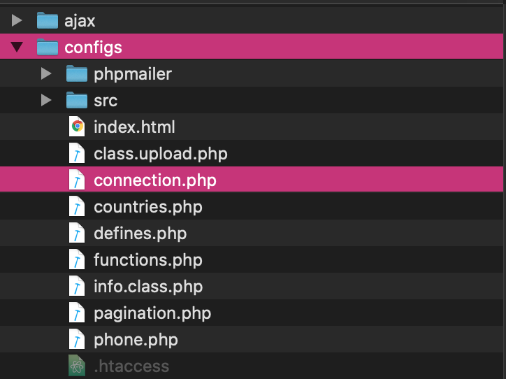
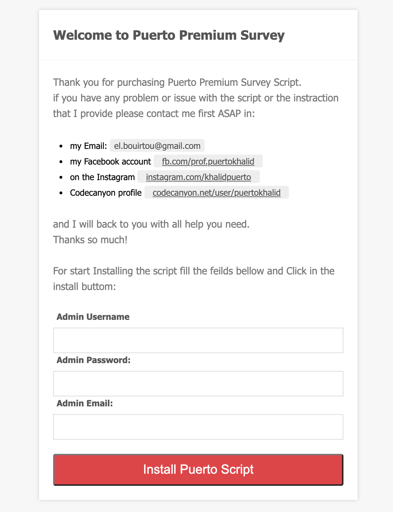
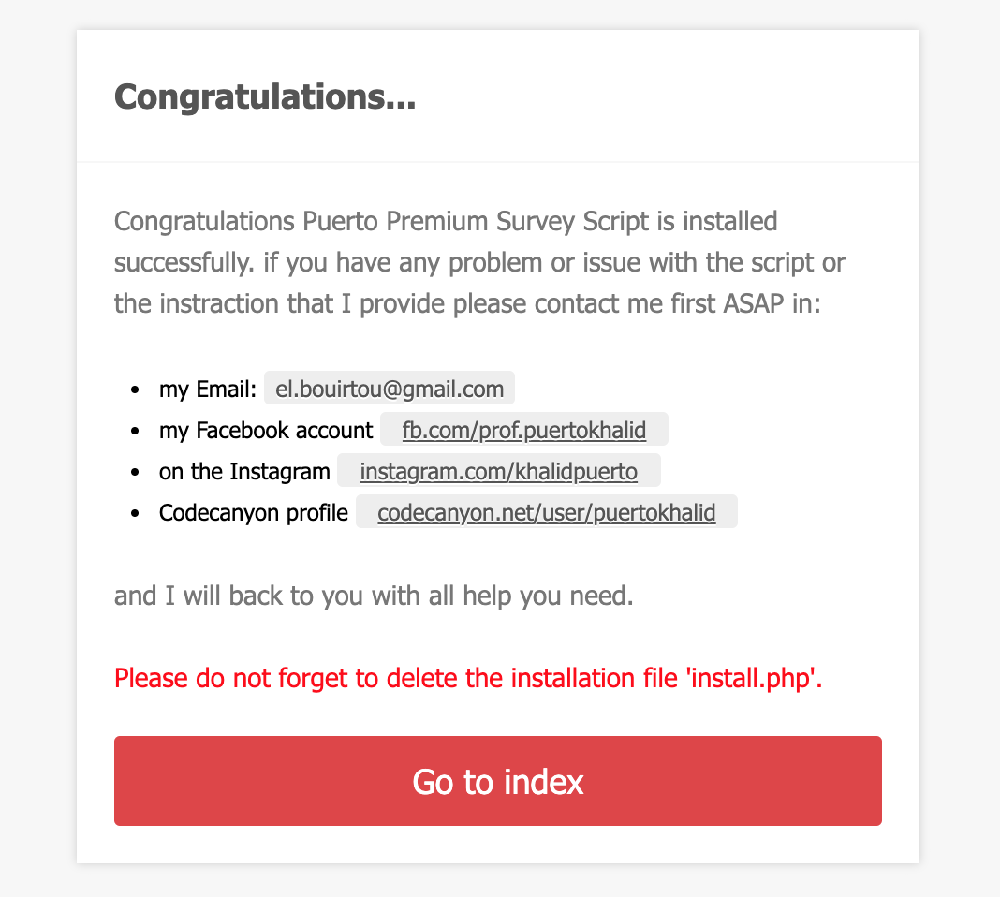
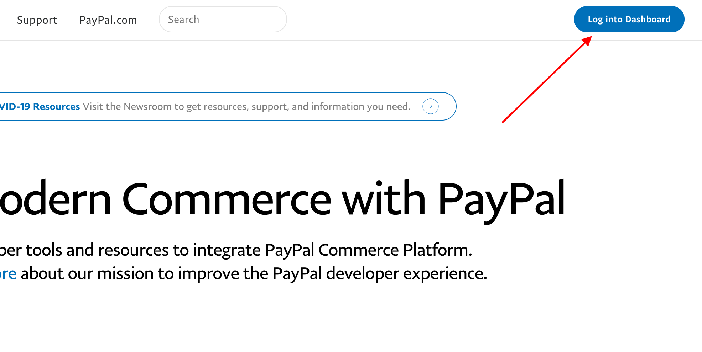
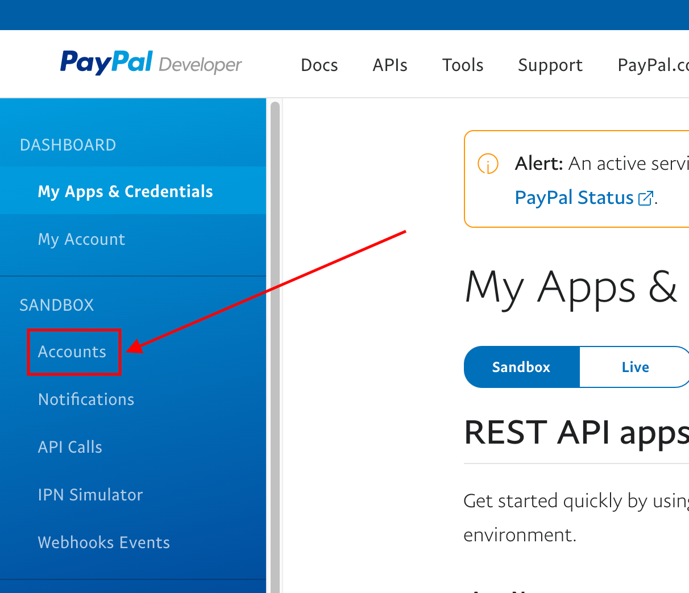
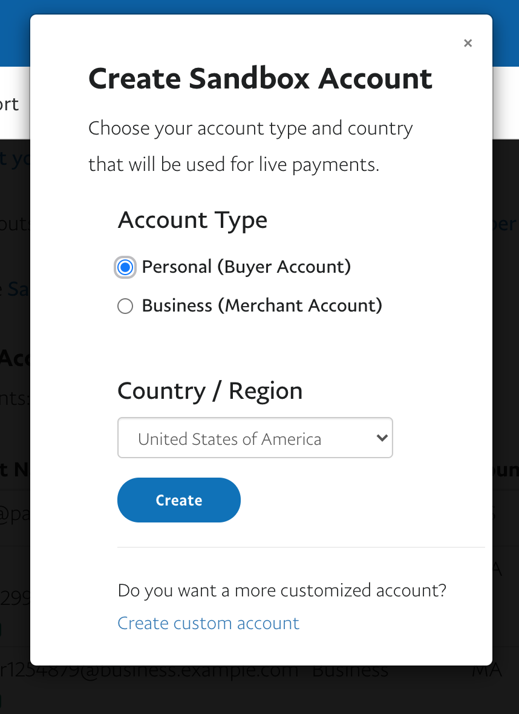
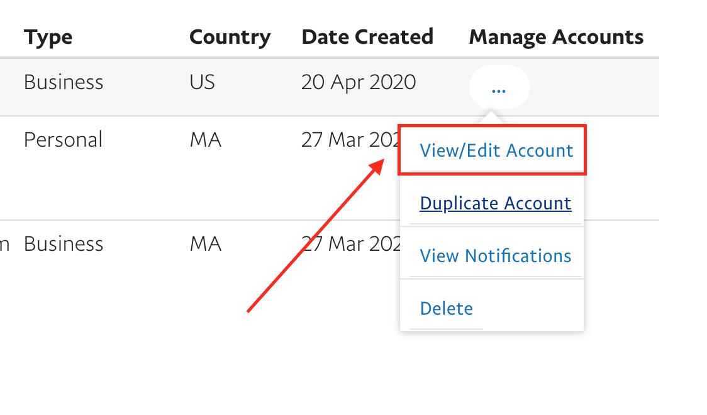
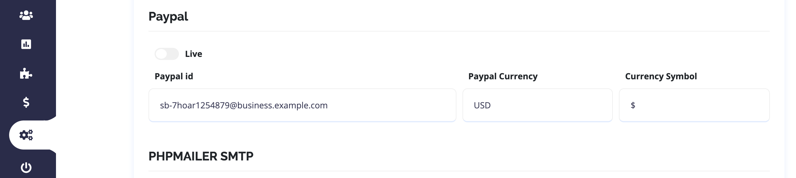

“Puerto Premium Survey” Documentation by “Puerto Khalid” v1.0
“Puerto Premium Survey”
Created: 28/02/2020
By: Puerto Khalid
Email: el.bouirtou@gmail.com
Thank you for purchasing my item. If you have any questions that are beyond the scope of this help file, please feel free to email via my user page contact form here. Thanks so much!
Table of Contents
- Overview about Puerto Premium Survey
- Install
- Structure
- PHP Structure
- CSS Files and Structure
- Sources and Credits
A) Overview - top
Hi, in this video I will show you an overview about Puerto Premium Survey. I hope you enjoy it.
please notice that, if you have any problem or issue with the script or the instraction that I provide please contact me first ASAP in my email el.bouirtou@gmail.com or on my Facebook account fb.com/prof.puertokhalid or the Instagram instagram.com/khalidpuerto. and I will back to you with all help you need.
A) Install - top
To install Puerto Premium Survey you would do as following:
At first you must open the file ./configs/connection.php:

Then edit the following code with your own server info:
# Database Host Name
define("HOSTNAME", "put here your hostname");
# Database Username
define("USERNAME", "put here the database username");
# Database Password
define("PASSWORD", "put here the database password");
# Database Name
define("DATABASE", "put here the database name");
After thaht go to http://yourwebsite.com/ and fillout the admin input with your informations and click "Install Puerto Script".

If as this image appears then the script is installed successfully.

then delete the install.php file.
Tips for Testing in the PayPal Sandbox
1) Create an account at http://developer.paypal.com

2) Then Sandbox Accounts

3) Create a business account first, and repeat the same process to create personal account.

4) After that click view/edit account and get the email ID

5) Then go to administration -> Settings -> Paypal and add the email ID

Tips for Going Live: Review PayPal’s Going Live Information
Sign in with Facebook
To implement Facebook Login system for the application, the first step is the creation of an app through the Facebook account.
Sign into the Facebook and go to developer.facebook.com
Once there, create an app.

Click Add New App button and select Website as the platform.

Enter the app’s name, an email id and select a category for the application. Now click Create App Id button. This will create an app in Facebook.

Now go to Settings, where the App Secret and App ID could be found. These ids will be used in the PHP application. Remember to add the website’s URL in App Domains.
Down the page, Click the Add Platform tab. Add website as a platform and enter the URL of the


This finishes the creation of the Facebook App. The next step is to create a server on a fast and reliable hosting platform. I have opted for Cloudways PHP stack server.
Now paste the App ID, App secret in the administration -> settings -> facebook.
At last make the staus of the app live

Now go to the facebook login > setting
Put your server link in the Valid OAuth Redirect URIs

If you find any difficulty to cofigure please check the youtube video or read the article
Google Login
Go to the Google API Console.
Select an existing project from the projects list, or click NEW PROJECT to create a new project:
Enter the Project Name.
Under the Project Name, you will see the Google API console automatically creates a project ID. Optionally you can change this project ID by the Edit link. But project ID must be unique worldwide.
Click on the CREATE button and the project will be created in some seconds.
In the left side navigation panel, select Credentials under the APIs & Services section.
Select the OAuth consent screen tab, specify the consent screen settings.
In Application name field, enter the name of your Application.
In Support email filed, choose an email address for user support.
In the Authorized domains, specify the domains which will be allowed to authenticate using OAuth.
Click the Save button.
Select the Credentials tab, click the Create credentials drop-down and select OAuth client ID.
In the Application type section, select Web application.
In the Authorized redirect URIs field, enter the redirect URL.
Click the Create button.
A dialog box will appear with OAuth client details, note the Client ID and Client secret. This Client ID and Client secret allow you to access the Google APIs.

Note that: This Client ID and Client secret need to be specified in the script at the time of Google API call. Also, the Authorized redirect URI needs to be matched with the redirect URL that specified in the script.
Now paste the Client ID, client secret in the administration -> settings -> facebook..
If you find any difficulty to cofigure please check the youtube video or read the article
B) Structure - top
The structure of the files of Puerto Premium Survey, is very simple:
- In the "root" there are the PHP pages of Puerto Premium Survey.
- In the folder "configs/" and subfolders there are the files of the Puerto Premium Survey system
- In the folder "css/" there are CSS files of the Puerto Premium Survey system
- In the folder "documentation/" there is the documentation page.
- In the folder "img/" there are Images of the Puerto Premium Survey system
- In the folder "js/" there are Javascript files of the Puerto Premium Survey system
- In the folder "upload/" there are the members images that uploaded in your server.
- In the folder "ajax/" there is the script's ajax files.
- In the folder "flags/" there is the script's flags images.
- In the folder "lag/" there is the script's languages files.
C) PHP Structure - top
To simplify the reading, we have divided the structure into two parts:
- PHP pages (in the "root"):
- configs.php, this script displays queries of system.
- dashboard.php this script displays the dashboard area.
- intall.php, this script displays the installation file.
- footer.php, this script displays a preview of a footer.
- login.php, this script displays queries of login system.
- header.php, this script displays a preview of a header page.
- index.php, this script displays a preview of index page.
- mysurvies.php, this script displays the the surveys list.
D) CSS Files and Structure - top
I'm using these CSS files in this item.
style.css contains all of the specific stylings for the Puerto Premium Survey.
rtl.css contains all of the specific rtl stylings for the Puerto Premium Survey.
If you would like to edit a specific section of the site, simply find the appropriate label in the CSS file, and then scroll down until you find the appropriate style that needs to be edited.
If you find that your new style is not overriding, it is most likely because of a specificity problem. Scroll down in your CSS file and make sure that there isn't a similar style that has more weight.
E) Sources and Credits - top
- I've used icons font from Font awesome.
- jQuery Livequery by Brandon Aaron
- jQuery SCEditor by Sceditor
Once again, thank you so much for purchasing this item. As I said at the beginning, I'd be glad to help you if you have any questions relating to this item. No guarantees, but I'll do my best to assist. If you have a more general question relating to the item on Codecanyon, you might consider visiting the forums and asking your question in the "Item Discussion" section.
Puerto Khalid